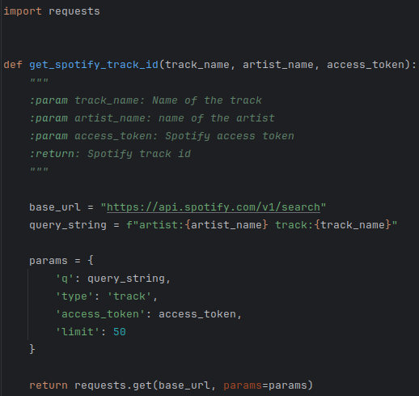
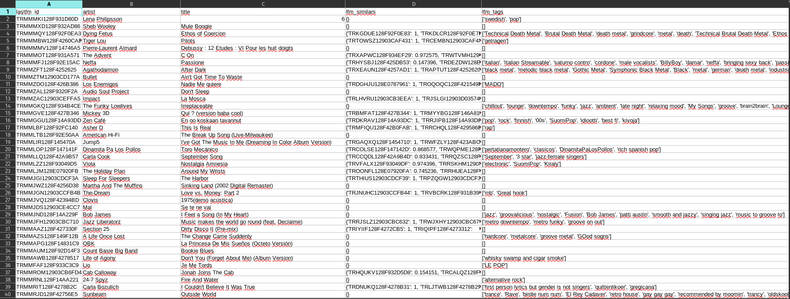
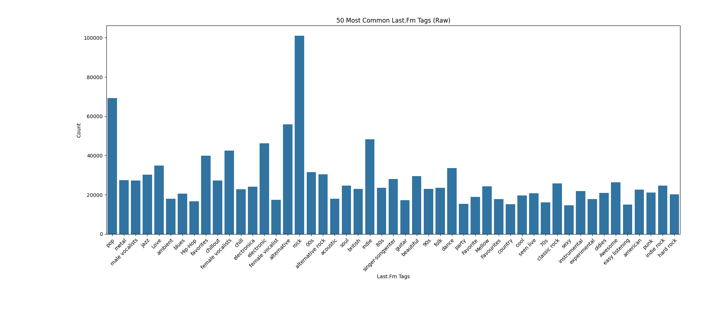
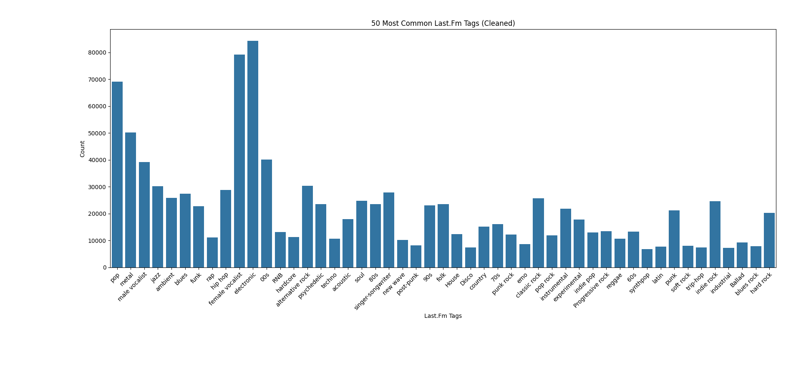

Data collection was completed in two different ways: file downloads and via an API. The file downloads included the Last.Fm dataset.csv file containing the Billboard Hot 100 data
https://accounts.spotify.com/api/token in order to generate an access token based on credentialshttps://api.spotify.com/v1/search in order to retrieve Spotify IDs based on artist and track nameshttps://api.spotify.com/v1/audio-features in order to retreive Spotify audio featuresFor example, the Python function below uses the API to retrieve a list of tracks based on search criteria. This list of tracks can be parsed through to find the needed Spotify ID: 
There are 9 audio features that we can extract from the Spotify data. All definitions are quoted directly from the Spotify API audio features documentation
Spotify data collection is ongoing due to the need of requesting data for almost one million songs. The visualizations below take into account the first 85,556 songs. As a first look at the Spotify data, it is interesting to look at each feature to see how they are distributed:
The last plot compares the distributions of the different features that have values in the range [0.0, 1.0]. It is interesting to see both the variety of distributions. The speechiness box plot is particularly interesting though also unsurprising. As stated above, a value closer to 0 indicates music and other non-speech tracks, so a distribution where most everything is close to 0 is unsurprising.
The Last.fm dataset serves two main purposes:
Each file was parsed and packaged together into a single .csv file:

The tags provided the largest cleaning task for the aggregated dataset. The type of tags that were focused on were genre-specific tags, tags defining what year a song is from, and whether the song had a male or female vocalist. These include tags like "female vocalist", "70s", and "punk". The figure below shows the 50 most common tags before any tags were filtered out. 
This plot shows several tags outside the scope such as multiple spellings and capitalizations of "favorite", "seen live", and "sexy". These tags and many others are not useful for our analysis. Additionally, the tags "female vocalist" and "female vocalists" exist. These tags and others were merged according to their respective similarities. The plot below shows the most popular tags after cleaning. 
Duplicate tags have been merged, and unnecessary tags have been removed. The plot now shows interesting peaks with female vocalist, electronic and pop. These insights could lead to further interesting questions to explore.
Inspecting the Billboard Hot 100 data showed it to be an already cleaned dataset. To visualize the data, look at the three plots below.
Given Taylor Swift's popularity and the major success of her Eras tour, it's unsurprising that she tops the list. The following chart shows what many would say is obvious: the number one spot is often held for only a week at a time, and then a new song takes the top spot the following week. A more surprising insight comes from the third plot. If a song makes it to the Billboard Hot 100, it could be likely to eventually rise to the top.